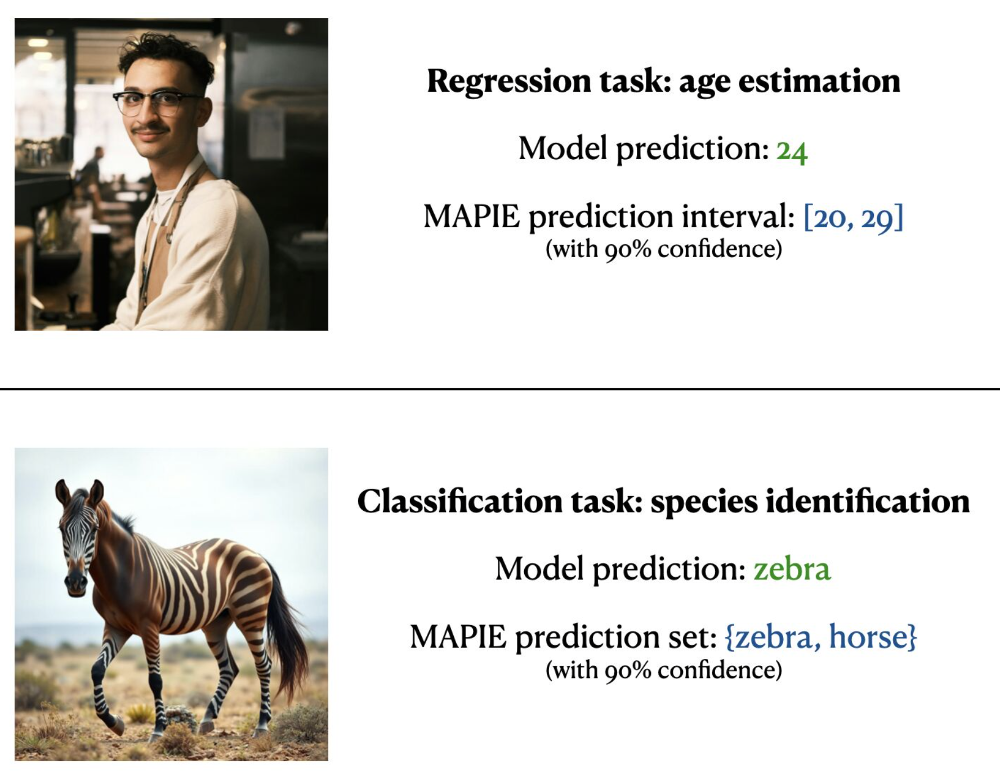

MAPIE — Model Agnostic Prediction Interval Estimator¶
An open-source Python library for quantifying uncertainties and controlling the risks of machine learning models.


 MAPIE v1 is live! This new version introduces major changes to the API. Check out the release notes.
MAPIE v1 is live! This new version introduces major changes to the API. Check out the release notes.
 MAPIE Roadmap 2026 — New features are coming: risk control for LLM-as-Judge and image segmentation, exchangeability tests, and improved adaptability for conformal prediction methods. Learn more.
MAPIE Roadmap 2026 — New features are coming: risk control for LLM-as-Judge and image segmentation, exchangeability tests, and improved adaptability for conformal prediction methods. Learn more.

What can MAPIE do?¶
Prediction Intervals & Sets¶
Compute prediction intervals (regression, time series) or prediction sets (classification) using state-of-the-art conformal prediction methods.
Risk Control¶
Control prediction errors for complex tasks: multi-label classification, semantic segmentation, with probabilistic guarantees on precision and recall.
Model Agnostic¶
Use any model — scikit-learn, TensorFlow, PyTorch — thanks to scikit-learn-compatible wrappers. Part of the scikit-learn-contrib ecosystem.
Theoretically Grounded¶
Implements peer-reviewed algorithms with theoretical guarantees under minimal assumptions, based on Conformal Prediction and Distribution-Free Inference.
 Examples¶
Examples¶
Explore our gallery of hands-on examples covering all MAPIE use cases:
 Quick Install¶
Quick Install¶
Requirements: Python ≥3.9 · NumPy ≥1.23 · scikit-learn ≥1.4
 References¶
References¶
- Vovk, Vladimir, Alexander Gammerman, and Glenn Shafer. Algorithmic Learning in a Random World. Springer Nature, 2022.
- Angelopoulos, Anastasios N., and Stephen Bates. "Conformal prediction: A gentle introduction." Foundations and Trends® in Machine Learning 16.4 (2023): 494-591.
- Rina Foygel Barber, Emmanuel J. Candès, Aaditya Ramdas, and Ryan J. Tibshirani. "Predictive inference with the jackknife+." Ann. Statist., 49(1):486–507, (2021).
- Kim, Byol, Chen Xu, and Rina Barber. "Predictive inference is free with the jackknife+-after-bootstrap." NeurIPS 33 (2020).
- Sadinle, Mauricio, Jing Lei, and Larry Wasserman. "Least ambiguous set-valued classifiers with bounded error levels." JASA 114.525 (2019).
- Romano, Yaniv, Matteo Sesia, and Emmanuel Candes. "Classification with valid and adaptive coverage." NeurIPS 33 (2020).
- Angelopoulos, Anastasios, et al. "Uncertainty sets for image classifiers using conformal prediction." ICLR (2021).
- Romano, Yaniv, Evan Patterson, and Emmanuel Candes. "Conformalized quantile regression." NeurIPS 32 (2019).
- Xu, Chen, and Yao Xie. "Conformal prediction interval for dynamic time-series." ICML. PMLR, (2021).
- Bates, Stephen, et al. "Distribution-free, risk-controlling prediction sets." JACM 68.6 (2021).
- Angelopoulos, et al. "Conformal Risk Control." (2022).
- Angelopoulos, et al. "Learn Then Test: Calibrating Predictive Algorithms to Achieve Risk Control." (2022).
 Citation¶
Citation¶
If you use MAPIE in your research, please cite:
Cordier, Thibault, et al. "Flexible and systematic uncertainty estimation with conformal prediction via the MAPIE library." Conformal and Probabilistic Prediction with Applications. PMLR, 2023.
@inproceedings{Cordier_Flexible_and_Systematic_2023,
author = {Cordier, Thibault and Blot, Vincent and Lacombe, Louis and Morzadec, Thomas and Capitaine, Arnaud and Brunel, Nicolas},
booktitle = {Conformal and Probabilistic Prediction with Applications},
title = {{Flexible and Systematic Uncertainty Estimation with Conformal Prediction via the MAPIE library}},
year = {2023}
}
 Affiliations¶
Affiliations¶
MAPIE has been developed through a collaboration between Capgemini Invent, Inria, Michelin, ENS Paris-Saclay, and with the financial support from Région Ile de France and Confiance.ai.